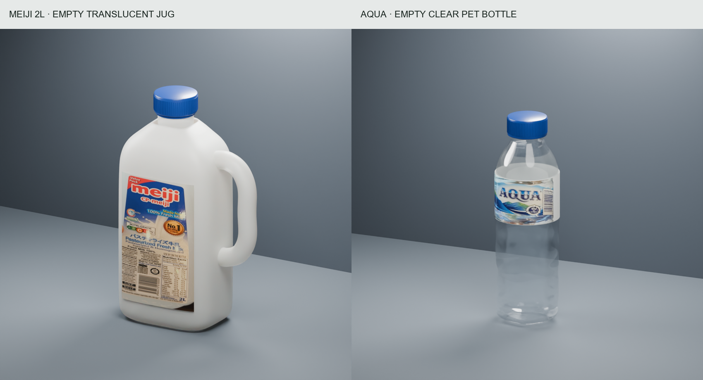
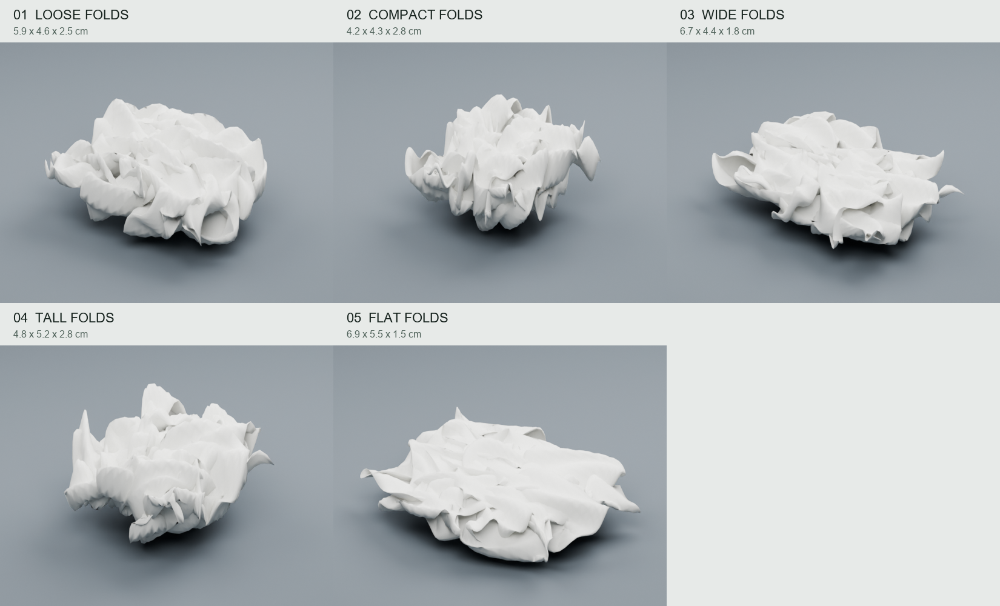
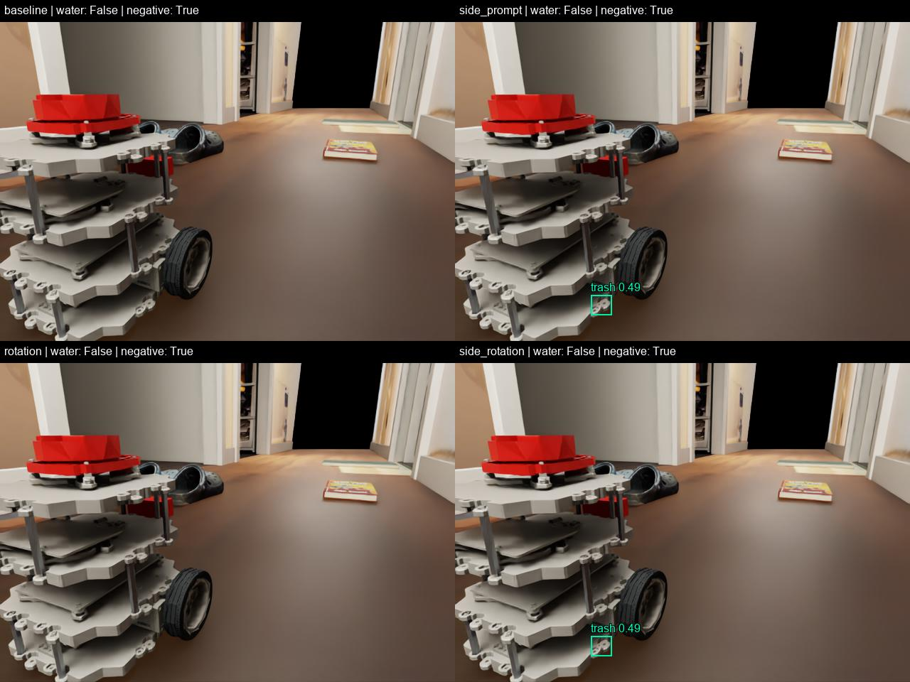

采集 RGB 和同相机的深度图，保存内参与相机到世界坐标的变换。
DEVLOG · 2026.09.29–30 · VISION TO ACTION
看见垃圾，
再走过去。
以前，我给小车一个坐标，看它能不能到达。这次我想把问题往前推一步：它能不能从自己的 RGB 相机里认出纸团、牛奶瓶和矿泉水瓶，找到它们的位置，再自己走过去？
从真实物品、扫描和 Blender 资产开始，接上 YOLOE、深度定位与已有的 PPO 导航。这是我们“小型 VLA”探索的第一步。
直接看三段第一视角标注录像 ↓01 / MOTIVATION
从“去这个坐标”，到“去找这个东西”。
走廊避障、加速和客厅实验已经验证了小车的一部分运动能力，但目标仍由人指定坐标。我希望增加一层任务含义：发现地上的垃圾，并接近它。这样，导航就开始服务于一个能被人理解的具体任务，而不只是完成轨迹。
第一阶段刻意不做拾取：先验证“看到什么 → 在哪里 → 能否走到附近”。沿用已经测试过的 Gazebo PPO + Isaac 路线安全判断，让新的不确定性集中在视觉识别和目标定位。Isaac Lab 原生 PPO 仍是另一条后续训练计划，本轮没有训练新 policy。
这里的“小型 VLA”是探索方向，不是模型架构的结论。当前是模块化的视觉—定位—动作管线：类别文字提示交给 YOLOE，视觉结果变成导航坐标，PPO 输出运动建议。没有一个端到端模型把任意自然语言和图像直接变成动作，也还没有自由语言任务理解或抓取能力。
02 / ASSETS
从手里的空瓶和纸巾，做成可测试的垃圾。
我拍摄并用 Scaniverse 扫描了 Meiji 2 L 牛奶瓶、AQUA 矿泉水瓶和揉成团的 tissue paper，得到照片与 GLB。扫描能帮助理解比例和外形，但带着地面碎片，透明瓶身也不完整。我决定：真实感优先，不必严格追着扫描网格做。
- 照片与扫描作参考：首版使用近似尺寸；尚未完成实物量尺校准。
- Blender 重建几何：补充瓶肩、瓶颈、瓶盖防滑纹、牛奶瓶把手、矿泉水瓶身细节与标签。两个瓶子都是空的，不添加液体。
- 分别处理材质：牛奶瓶使用乳白半透明塑料，矿泉水瓶使用近透明薄壁塑料。纸团用连续薄片的褶皱和变形做出五种形态；不是完成了揉纸物理仿真。
- 进入 Isaac Sim：保留 Blender 源文件，导出 USD、贴图和简化碰撞体，再从机器人相机检查尺度、遮挡和材质。

Blender 预览。透明材质进入 Isaac Sim 后仍需检查，不能把 Blender 渲染效果当成仿真中的最终效果。

五个不同纸团；本轮行驶测试使用其中一个。
接入时还发现一个导出错误：牛奶瓶的曲线把手在 USD 中膨胀到约两米，直接挡住镜头。把曲线转换成网格再导出后，瓶子整体恢复到约 15.5 × 8.1 × 25.1 cm。这个问题提醒我：模型在 Blender 中好看，还不等于已经能用于仿真。
机器人沿用之前确认的白色外观，室内沿用调整后的灯光。曾误用旧场景带回暗色机器人和旧灯光，已修正，并把外观配置独立保存为后续测试默认值。
03 / PERCEPTION STACK
识别给出“是什么”，深度给出“在哪里”。
YOLOE-11s-seg 使用文字类别提示，输出类别、置信度、检测框与 mask。
缩小 mask 边缘，读取有效深度；反投影到相机坐标，再变换到世界坐标。
以可见表面坐标估计为依据，朝机器人一侧留 28 cm，生成靠近目标。
沿用 LiDAR 观测适配与 PPO；深度和 LiDAR 参与地图，必要时路线控制接管。
差速车轮执行线速度与角速度。记录到达、耗时、接管和障碍接触。
YOLOE 使用预训练权重推理，本轮没有用这些资产重新训练。三组使用同一套提示：milk jug、plastic water bottle、crumpled tissue paper，检测阈值 0.4；同类别高度重叠的嵌套框去重。最初使用 milk bottle 时有漏检，改用更贴近带把手瓶型的 milk jug 后再测试。YOLOE 官方说明 ↗
世界位置取识别区域内三维点的中位数，代表可见表面估计，不是精确物体中心。资产摆放坐标不参与生成导航目标；机器人自身位置仍来自仿真真值。初次接入还发现新 USD 层缺少明确的米制单位，导致深度量级不对，已在最终采集前修正。
深度有两处作用：一处把识别结果变成目标坐标；另一处继续参与原有避障地图。RGB、YOLOE 特征和深度图都没有直接输入 PPO，PPO 获得的是已有导航观测与新的目标信息。
04 / TESTS
一次只放一种，让识别和行动对得上。
三个物体放在一起时，光看小车前进并不能证明它认出了谁。因此我要求：分开测试、使用机器人第一视角、显示识别标注，再分别走向纸团、牛奶瓶和矿泉水瓶。每组重置场景，只保留一个目标，出发前由 RGB + 深度生成停车点。三组都使用白色机器人和同一套室内灯光。
| 目标 | 出发识别置信度 | 物理仿真耗时 | PPO / 路线接管 | 结果 |
|---|---|---|---|---|
| 纸团 | 0.73 | 4.43 s | 19 / 1 | 到达停车点 |
| 牛奶瓶 | 0.51 | 6.23 s | 24 / 5 | 到达停车点 |
| 矿泉水瓶 | 0.92 | 6.43 s | 26 / 4 | 到达停车点 |
三次测试监测到的障碍接触力均为 0；到达判断为距停车点小于 4 cm，并检查停车漂移。这里是三个固定、单目标短测，不是随机场景的成功率评估。控制线速度上限沿用 0.22 m/s。
看录像时需要区分两件事：出发前识别和深度定位实际决定导航目标；录像里的框是在录制后对各 RGB 帧重新运行 YOLOE 得到的。当前还不是边走边根据视觉持续更新目标的闭环。漏检时显示“目标未检出”，导航继续沿用出发前定位。
05 / WHAT WE LEARNED
到达了，不代表一直看得懂。
纸团在这批检查样本中持续检出；牛奶瓶和矿泉水瓶在靠近过程中有部分帧漏检。独立录像的标注检查分别为纸团 22/22、牛奶瓶 20/31、矿泉水瓶 26/32；这个分母包含出发图和末帧复查，不是独立数据集上的召回率，也不是每个物理仿真帧都做了检测。
此前三物体同场景的朝向测试里，牛奶瓶还曾被误认成矿泉水瓶。换成单独目标和更合适的类别描述可以帮助这次验证，但没有消除视角、光照和物体遮挡带来的问题。机器人能继续到达，是因为它保留了初始坐标，不意味着视觉识别全程稳定。
“垃圾”也是任务定义：这些已知空瓶和揉过的纸巾由我选作目标。检测出瓶子，不等于视觉模型已经知道它是空的、被丢弃的或应该清理。透明瓶子的仿真深度返回也不能直接代表真实深度相机的可靠性。
初次短测还出现“车走了，但时间记录为零”的问题，原因是录像采集后的时间线读数没有推进。最终测试改用 PhysX 物理步累计计时，保留了旧试验的无效计时说明。
2026.10.01 / YOLOE ZERO-SHOT BASELINE
从持续盯住目标，到记住垃圾、找到停车点。
这次实验的关键调整来自我观察机器人行为后的判断：牛奶瓶、矿泉水瓶和纸团都属于垃圾，不必先分清类别；转弯时前置相机看不见目标很正常，应该记住位置；停车也不必限定在圆周上的一个点。程序据此改为三帧确认后锁定静态目标位置，在约 28 cm 的环带上选可达停车点；没有合适点时向外寻找，最大到 65 cm。到达后转动机身，做有限角度搜索。
这里的“垃圾”是我们为已知空瓶和纸团指定的任务类别。模型没有学会判断瓶子是否为空，也没有训练新权重。导航仍是 PPO + Isaac 路线接管；这不是端到端训练的 VLA。
原指定类别、丢失视野就停的十组基线通过 2/10；统一成垃圾后通过 6/10。这同时改变了任务判定，不能当作模型精度提升。后续只复测失败的第 5、8、9、10 组：位置记忆和可达停车让四组都到达，其中三组重新确认目标，第 5 组仍漏检侧躺瓶子。这引出了下面的识别对照。
提示词与旋转辅助：同一批画面比较
| Variant | Bottle detected / 20 | Negative frames with detections / 6 | Median CPU inference |
|---|---|---|---|
| YOLOE Zero-Shot Baseline | 7/20 | 0/6 | 0.25 s |
| + lying-bottle prompt | 12/20 | 1/6 | 0.25 s |
| + Rotation Augmentation | 20/20 | 0/6 | 0.61 s |
| + prompt + rotations | 20/20 | 1/6 | 0.60 s |
新增提示词为 “plastic bottle lying on its side”。它提高了原图检出，但在一张无垃圾画面误检了机器人底盘部件。原提示词配合原图与 ±90° 推理，在本批画面表现更好，因此保留该方案。旋转后的分割掩码先还原到原图，再读取对应深度。
这是同一资产、同一房间中新采集的五种朝向 × 四个距离，不是独立真实世界精度或 AP。六张负样本隐藏全部垃圾，保留书、鞋及场景；远处画面也包含机器人。前一批 20 张的旋转版仍漏检 3 张，不能因为这次 20/20 就声称问题全部解决。CPU 推理变慢；旋转版本的静态目标视觉有效期为 1.2 秒，原导航传感器时效和 12 cm 净空检查没有放宽。

26-frame comparison · Detection data
四组困难案例：在线复测与第一视角录像
以下标注来自导航实际使用的在线识别结果，不是事后重新检测。表中的到达和视觉确认分开计时；采图时短暂停止物理步进，推理使用 CPU，因此不代表实机实时速度。
| Case | Arrival | Finish | Result | PPO / route takeover | Max sampled contact |
|---|---|---|---|---|---|
| 05 | 10.8 s | 13.8 s | goal_reached | 20 / 0 | 0.0 N |
| 08 | 8.0 s | 9.0 s | goal_reached | 17 / 1 | 0.0 N |
| 09 | 8.6 s | 9.6 s | goal_reached | 17 / 1 | 0.0 N |
| 10 | — | 5.2 s | no_reachable_parking | 9 / 4 | 0.0 N |
第 10 组在 5.23 秒停止：目标停车格仍为空闲，但机器人所在格的净空降到 11.18 cm，小于 12 cm 门槛，规划器因此无法从起点展开。停止标签 no_reachable_parking 不等于目标附近完全无路，也不是本次识别丢失。地图是否过于保守以及如何安全退出膨胀区，留给后续导航修正。
这是对四个历史困难案例的复测，不是新的十组成功率。场景真值只用于布置和离线核对，目标来自 RGB + 深度；机器人自身定位仍使用模拟器真值。
Experiment summary · Navigation evidence · Experiment scripts
NEXT / PATROL TO COLLECTION
从走廊到客厅：巡逻、发现、靠近，再继续。
下一步把单个目标实验变成实际任务：机器人沿走廊到客厅巡逻，边走边寻找垃圾；确认后记住坐标，选择可达停车点，靠近并重新确认，再恢复巡逻。为目标保存“待访问 / 已访问 / 暂不可达”状态，避免重复追逐同一件垃圾。巡逻点可以预设，但垃圾坐标不能预先交给导航。
先验证不同摆放下的发现数量、误检访问、重复访问、接近成功、耗时与碰撞。已到达但没看见目标、没有可达停车点，都单独记录。再加入机械臂，扩展为“观察 → 接近 → 抓取 → 投放 → 确认清除”；走到旁边不等于已回收。机械臂抓取需要额外的姿态估计、可达性和抓取验证。当前还没有实现巡逻或抓取，Isaac Lab 原生 PPO 训练仍是独立方向。